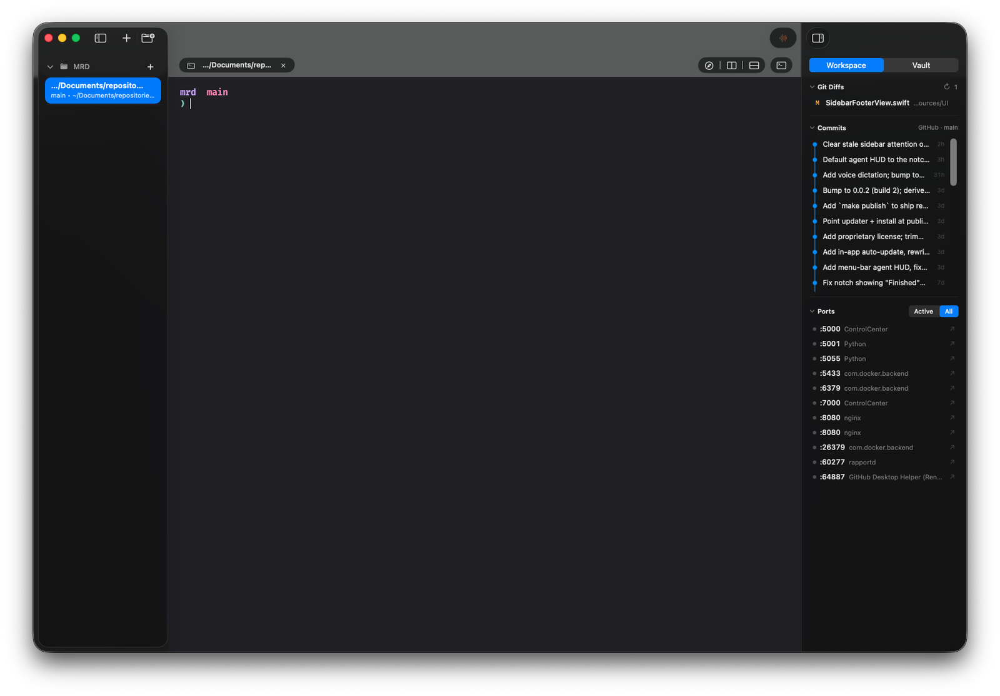
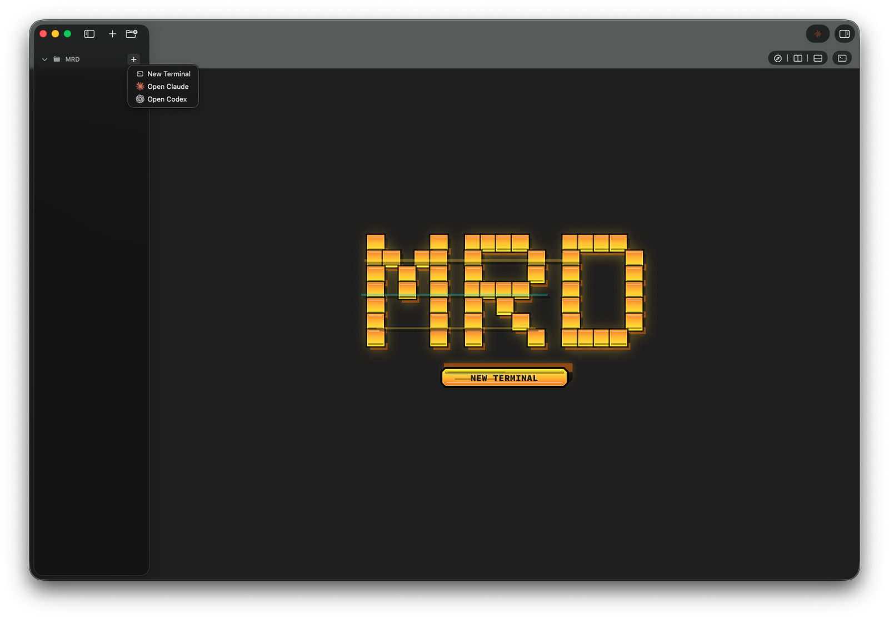
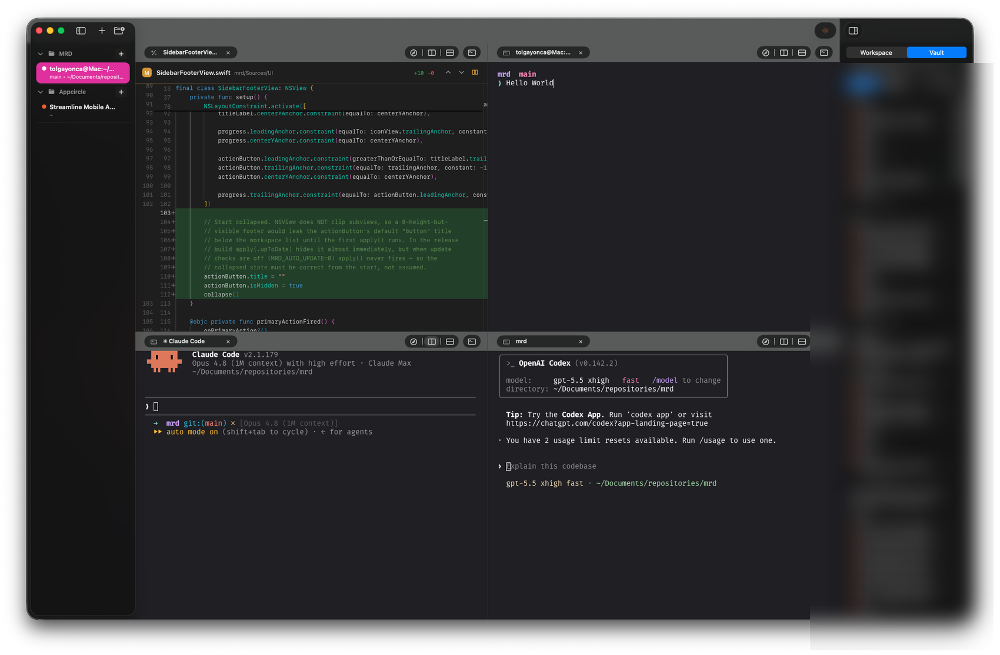
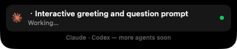
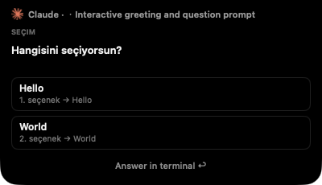
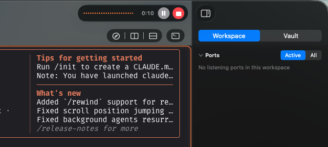

mrd is a native macOS terminal orchestrator. Spin up Claude Code and Codex in tidy workspaces, watch every agent from a Dynamic-Island HUD, answer their questions without leaving the keyboard, and pick up exactly where you left off after a restart.

Everything is native AppKit on macOS 26's Liquid Glass — no Electron, no daemon, one process.
A non-activating panel under the notch shows every live agent — running, finished, or waiting on you. Click a row to jump straight to that pane. It never steals focus.
When an agent asks a question or needs permission, a clean Allow / Deny card appears in the HUD. Decide without switching windows — your answer flows right back to the agent.
Talk to your agent. A mic appears whenever a Claude or Codex pane is focused; speech is transcribed fully on-device and pasted in — you press Enter when you're ready.
Quit and reopen — mrd restores your layout and resumes each agent conversation with its native --resume, replaying the scrollback so nothing feels lost.
Organize projects in the glass sidebar with branch and folder at a glance. Splits, tabs, and even a browser pane live inside each workspace. Jump with ⌘1–9.
Rendering is libghostty — fast, GPU-accelerated, and it reads your existing ~/.config/ghostty config, so your colors and keybinds come along for free.
mrd talks to agents through their own hook system — not by scraping the screen. That means the status you see is the status that's true: green while a turn is running, amber the moment it's waiting for you, quiet when it's idle.

Three panels — Sidebar, Content, Inspector — sitting on macOS 26's real glass materials, not a web imitation. The Inspector surfaces what a project is doing: listening ports, branch, and more.

The notch HUD collapses to a quiet pill while a turn runs, then opens into a full question card the moment an agent needs you — choices and all. Pick an answer right there, and it flows straight back to the terminal.



No background daemon, no Electron, no telemetry. Dictation runs on Apple's on-device speech models. Agent status comes from local hooks — mrd never reads your screen or your keystrokes to figure out what's happening.
Dictation uses macOS 26's SpeechAnalyzer — audio never leaves your Mac.
No daemon to babysit. PTYs spawn in-app; closing the app closes everything.
Signed and notarized by Apple — download, drag to Applications, open. That's it.
Download the latest build and point it at a repo. Hooks set themselves up, and your first agent is one ⌘T away.